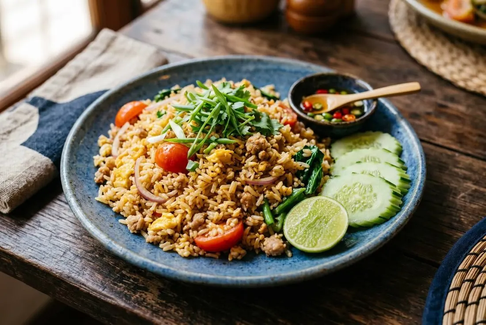

Day-old jasmine rice fried hard in a hot wok, garlic and pork and egg, tomato folded in gently. Served with cucumber, lime and fish sauce with chillies. Simple — until you try to get it right.

Fried rice looks like the easiest thing in Thai cooking and is the one nobody gets right first. On Pantip the plea is a standing joke: "Please give me a fried rice recipe — no matter how I fry it, it's never good." The answer is never in the ingredients list. It's in the rice being a day old, the wok being actually hot, and the tomato surviving the pan in one piece.
And the ceiling is high. Hia Hai — a street stall in Ekkamai — has sat in the Michelin Guide every year since 2020 on the strength of its crab fried rice: wok-fragrant rice, lump crab meat piled on top, a seafood sauce drizzle, queues every day. One dish, world status. That recipe is the variant below.
| Thai | English | Amount |
|---|---|---|
| ข้าวสวยหอมมะลิ (แช่เย็น) | Day-old jasmine rice, cold | 350 g |
| หมูสับ | Minced pork | 150 g |
| ไข่ไก่ | Eggs | 2 |
| กระเทียมสับ | Garlic, chopped | 20 g |
| มะเขือเทศ | Tomato, wedges | 1 |
| หอมใหญ่ | Onion, sliced | ½ |
| คะน้า | Kale stalks (คะน้า), bite-size | 2 |
| ซีอิ๊วขาว | Light soy sauce | 1½ tbsp |
| ซอสปรุงรส | Seasoning sauce | 1 tbsp |
| น้ำปลา | Fish sauce | 1 tbsp |
| น้ำตาลทราย | Sugar | ½ tbsp |
| พริกไทย | White pepper | ¼ tsp |
| น้ำมันพืช | Vegetable oil | 2 tbsp |
| ต้นหอมซอย | Spring onion, sliced | 20 g |
| พริกน้ำปลา | Prik nam pla — fish sauce with sliced chillies | to serve |
The ancient version (Thairath's ข้าวผัดไข่โบราณ) adds a spoon of dark soy for colour and more fish sauce — otherwise the same dish.
The difference is restraint. Same day-old rice and hot-wok technique, but the seasoning is lighter — the crab is the flavour. Lump crab meat goes in near the end, just warmed through, never fried to shreds.
The plate: rice mounded, a generous pile of crab meat on top, a drizzle of the house seafood sauce, spring onion and cucumber around the edge. Queues out the door since the Guide found it.
At home: skip the pork and egg if you like, keep the garlic and the wok, fold in 150 g of white crab meat at the end, and serve with prik nam pla rather than the seafood sauce — honest and very good.
Fish sauce or soy? The classic home line is fish-sauce-forward; modern versions run soy-forward. The ancient recipe uses both plus dark soy.
Tomato and onion. In the old version, out of the minimal modern one. If they're in, the tomato is handled gently — that part nobody argues.
The egg. Scrambled through the rice, or fried crisp and served on top (ข้าวผัดไข่ดาว). Both are standard.
Protein. Pork, chicken, prawn, crab, salted fish — every shop has its version; the technique is identical.
Butter. A modern home style starts the pork in butter instead of oil (Thairath's pork-and-egg recipe) — richer, not traditional.
This recipe is translated from the following Thai-language sources. Where they disagree, we've said so.
1. Thairath — "5 สูตรข้าวผัดไข่ พร้อมวิธีทำข้าวผัดไข่ง่ายๆ ให้อร่อย ข้าวร่วน เม็ดสวย" (incl. the ancient version and technique tips) — thairath.co.th
2. Kapook — "ข้าวผัดจานเด็ด เมนูตามสั่งทำง่าย อร่อยเหมือนกินที่ร้าน" (22 recipes + wok rules) — cooking.kapook.com
3. Hia Hai (Here Hai, Ekkamai) — crab fried rice, Michelin Guide 2020–present (Wongnai review + Ryoiireview roundup) — wongnai.com
4. Pantip thread 42519741 — "ขอสูตรข้าวผัดหน่อยครับผัดยังไงก็ไม่อร่อย" (the failure-mode discussion) — pantip.com